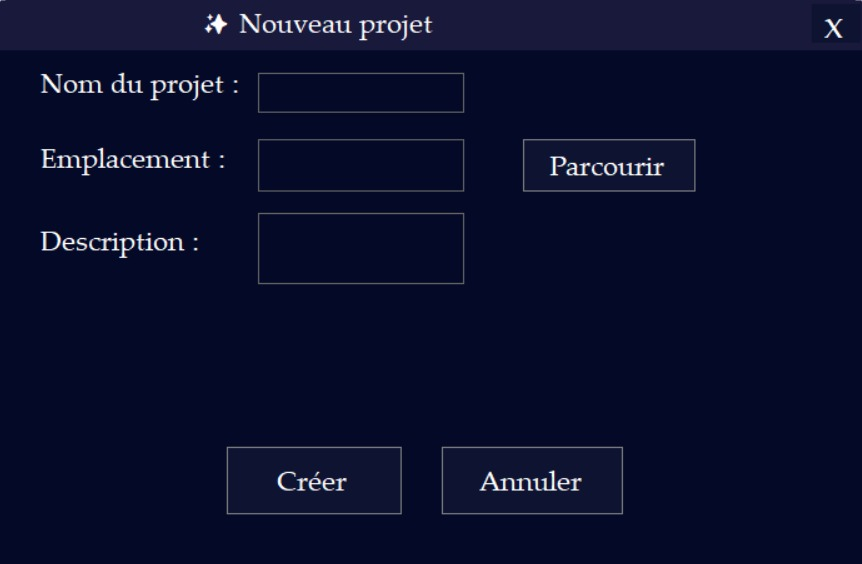
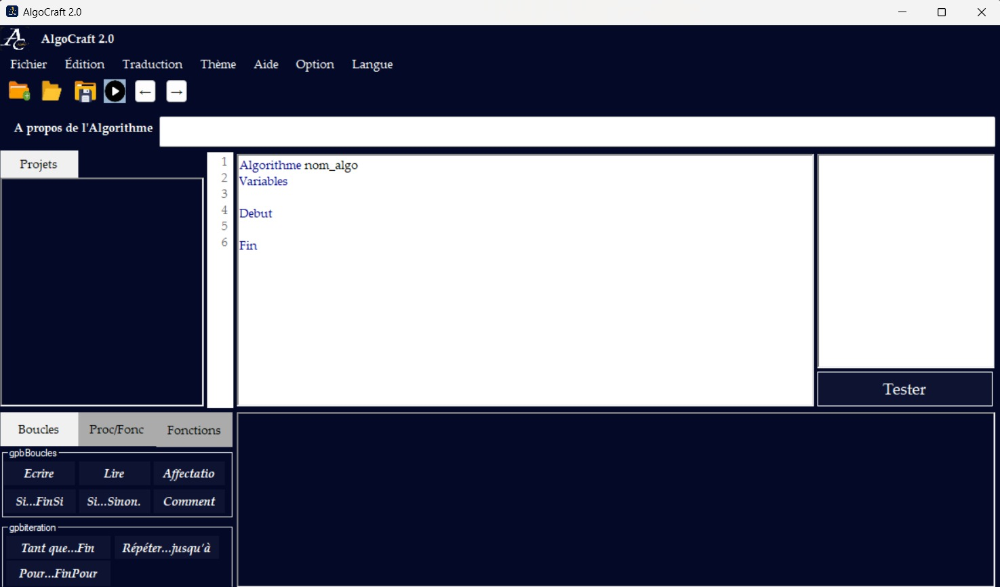

Copies d'ecran



L'éditeur intelligent pour apprendre l'algorithmique et la programmation
TÉLÉCHARGER GRATUITEMENTGratuit, libre et facile d'utilisation
100% conforme aux programmes
du lycée et du collège
AlgoCraft est bien plus qu'un simple éditeur de pseudo-code. C'est une plateforme complète d'apprentissage et de développement algorithmique conçue pour :
Une expérience utilisateur soignée avec :
Cette présentation illustre comment créer un algorithme simple dans AlgoCraft, permettant de calculer l'image d'un réel x par la fonction linéaire f(x) = 3x + 4. Ce cas pratique vous guidera pas à pas dans l'utilisation des principales fonctionnalités de l'application.
Commencez par créer un nouvel algorithme avec la structure fondamentale :
Déclaration des variables : Commencez par déclarer la variable x en cliquant sur "Déclarer nouvelle variable" dans l'interface. Saisissez "x" dans le champ dédié au nom, puis sélectionnez le type adapté : entier pour les nombres entiers ou réel pour des nombres décimaux. Validez pour enregistrer la variable.
Répétez l'opération pour déclarer une seconde variable y qui contiendra le résultat de l'expression mathématique.
Positionnement dans le code : Assurez-vous que le curseur ou la sélection dans l'éditeur AlgoCraft est positionné sur la ligne d'instruction DEBUT_ALGORITHME. Cela garantit que les instructions que vous ajouterez seront bien prises en compte dans l'exécution de votre algorithme.
Ajout d'instructions : Cliquez sur "Nouvelle Ligne" pour insérer une ligne d'instruction vide dans l'éditeur.
Lecture de la variable : Pour demander la valeur de x à l'utilisateur lors de l'exécution, utilisez le bouton "Ajouter LIRE variable". Sélectionnez la variable x dans la liste proposée et validez. Cette instruction permet à l'algorithme d'attendre une entrée utilisateur.
Affectation d'une expression : Placez le curseur sur la ligne suivante, cliquez sur "Nouvelle Ligne" puis "AFFECTER valeur à variable". Choisissez y comme variable cible, puis saisissez l'expression 3*x + 4 dans le champ correspondant. Validez pour enregistrer l'affectation.
Affichage du résultat : Après l'instruction d'affectation, ajoutez une nouvelle ligne. Cliquez sur "Ajouter AFFICHER variable", sélectionnez la variable y et validez. Cette étape affichera la valeur calculée dans la console intégrée lors de l'exécution.
Test de l'algorithme : Cliquez sur le bouton "Tester" pour ouvrir la fenêtre de test d'exécution. Dans cette nouvelle fenêtre, cliquez sur "Lancer l'algorithme". Une invite vous demandera de saisir une valeur pour x. Après saisie, le résultat calculé (l'image de la fonction) s'affichera dans la zone "Résultat". Vous pouvez relancer le calcul autant de fois que souhaité sans fermer la fenêtre.
Pour revenir à la fenêtre principale, cliquez simplement sur "Fermer". Vous pouvez ensuite sauvegarder, modifier ou étendre votre algorithme selon vos besoins.
Convertissez votre pseudo-code en :
17 fonctions mathématiques intégrées :
Absolu() Racine() Cos() Sin()
Tan() Puissance() Maximum() Minimum()
Arrondi() Logarithme() Exponentielle()
Modulo() Alea() ArcCos() ArcSin()
ArcTan() Degres() Radians()
L'auto-complétion vous assiste avec :
Diffusez votre travail facilement :
Débutez avec des algorithmes basiques avant de passer aux structures complexes.
Exécutez votre code fréquemment pour détecter les erreurs rapidement.
L'auto-complétion et les suggestions accélèrent votre apprentissage.
Comparez votre pseudo-code avec les langages de programmation réels.
AlgoCraft est une plateforme complète conçue pour faciliter la création, l'édition, l'exécution et la traduction d'algorithmes avec une interface utilisateur moderne et intuitive. Voici ses principales caractéristiques :
Création intuitive de variables avec types multiples :
Variables
age: entier
prix: reel
nom: chaine
Éditeur avancé avec fonctionnalités professionnelles :
Exécution dynamique et optimisée :
Système de traduction intelligent vers 4 langages :
// Traduction automatique
// Pseudo-code → C#/Java/C/Python
17 fonctions mathématiques intégrées :
Absolu() Racine() Cos()
Sin() Tan() Puissance()
Maximum() Minimum() Arrondi()
Logarithme() Exponentielle() Modulo()
Alea() ArcCos() ArcSin()
ArcTan() Degres() Radians()
Interface d'exécution riche en fonctionnalités :
Support de toutes les structures algorithmiques :
Si condition Alors
// Instructions
FinSi
Outils avancés pour un développement serein :
Système complet de gestion des travaux :
Expérience utilisateur soignée et personnalisable :
Fonctionnalités de diffusion avancées :
Base solide pour les évolutions futures :